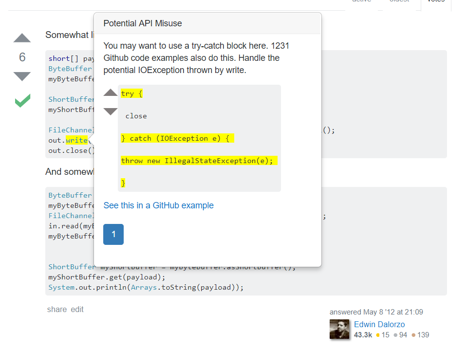
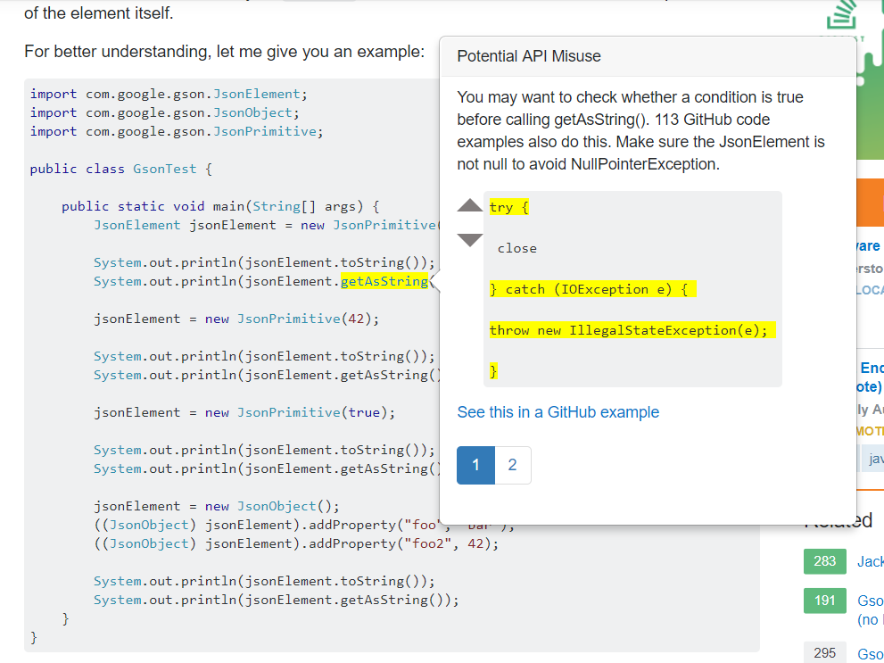
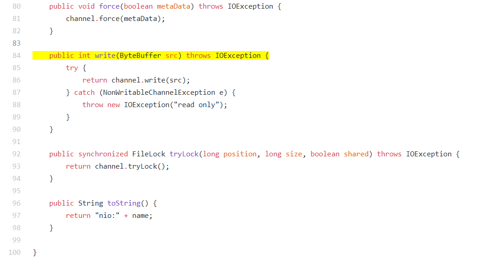

I started my penultimate week of this program exploring Boa, a backend tool that Maple uses as part of its GitHub mining. It's been really great to be able to learn about how the backend works, even though I'm not specifically working on that; Tianyi has been helpful with explanations and pointing me to various resources, since he wants me to be able to understand how our whole project works, not just the parts that I've been working on.
Tianyi and Miryung wanted to add some more APIs to our database at some point, so I added about 48 new patterns from crypto and concurrent Java APIs to our database. Most of them were exception-handling and null checking, and there were some file stream handling patterns in there as well, since I was just looking through the exceptions in the Java docs online and inferring some basic patterns from them. So if a method throws a NullPointerException, for instance, I would add a try-catch pattern as well as a pattern that necessitated a null-check, so an API call sequence we might check later on against these patterns would have to fulfill at least one of them.
Tianyi finished the type resolution issues, so now the popups only generate on calls that are actually problematic, and only displays the relevant violations:

I've been testing the plugin on a variety of Stack Overflow posts now to look for lingering bugs, edge cases, etc., and at one point this week I discovered a small issue with popup generation: if the same API call was made multiple times in the same code snippet, the plugin would highlight each instance of the call and generate the same popup on it. This makes sense to some extent but Tianyi and I decided that for simplicity and ease-of-use, we just want the first instance of the problematic API call to be highlighted. Once we'd identified this problem, the solution was trivial: I added jQuery's :first selector to my search in the code snippet for the API call to solve it. It's pretty exciting to see the plugin working correctly on various test cases, not just the couple that I'd been using while building the meat of it.

We met with Dr. Kim on Wednesday to figure out what I should do for the rest of my time here, and decided that I should implement the feature in which the user can click on "See this in a GitHub example" (which you can see in the image above) -- it's been a dead link up until this point. Tianyi suggested implementing a hardcoded version of it in the front-end first and then moving to the back-end, since we need to link our extracted GitHub links with our patterns in the database and it will be easier to test it if the front-end is working. I'm about done with the front-end implementation, but it was more work than I had anticipated. I had to set up a different script that would run if the plugin encountered a GitHub page, and then I used the Chrome.storage API to write the method call linked to the GitHub pages link in the popup to a shared storage space for the plugin's scripts. The GitHub script has a listener so that it only runs if there's a message for it in the storage, so it only runs if a popup link has been clicked. Once at the GitHub project file that the link points to, it needs to highlight the method that uses the API call we're looking for. So far I've gotten it to highlight the declaration, and scroll the view down to that point when the page loads so that the user can find it more easily. For a FileChannel.write wrapped in a try-catch block, I have this example:

Highlighting the entire method is a little weird, partly because of the formatting that GitHub does (similar to Stack Overflow's, which I talked about last week). I'll have to walk through the method and look for curly braces, maybe keeping opening braces in a stack and popping them off when I find a closing brace. Once I pop the last one off and the stack is empty, then I know that that was the last curly brace, so that's where I should stop highlighting. So, I have this idea for a solution but I'm working on actually setting up a way to walk through the code to do this, and start at the method I've already identified so it doesn't mess up my solution.
The other thing that Dr. Kim wants me to do is to write a draft of a demo paper for this project (which will also be my final report for the DREU program). I've been learning LaTeX, which has kind of fun but also a little frustrating (it took me forever to get subfigures working correctly). I'm hoping to finish a first draft early next week so I can have a more polished draft by the time I'm done.
Tianyi's working on synthesizing code examples from the database patterns for the popups, which is why the "examples" in the popups are all hard-coded right now. Once he finishes that and I finish the links, then we'll have a pretty solid prototype. Tianyi and Dr. Kim are hoping to do a user study with this prototype, and we'll be keeping in touch since that will be happening sometime after I leave.